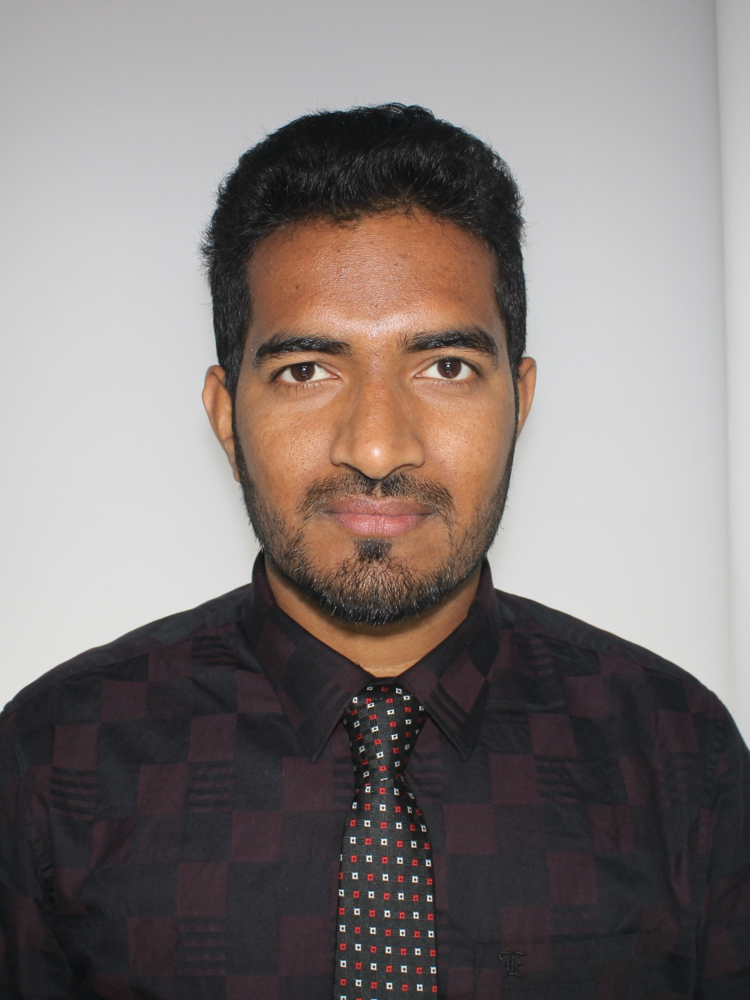

Kollan Halder
M2 Student | Coastal Geosciences and Geophysics
La Rochelle, France | +33 7 59 84 58 99 | kollan.halder@etudiant.univ-lr.fr | LinkedIn: Kollan Halder
Profile
M2 student in Environmental Sciences - Coastal Geosciences and Geophysics at the University of La Rochelle, France. Interested in coastal oceanography, sea-level rise, vertical land motion, and coastal hazards. Experienced in tide-gauge data analysis, GNSS, satellite altimetry, extreme sea-level analysis, and geoscientific data processing using Python. Skilled in QGIS, ArcGIS, environmental and climate data analysis, and geophysical field measurements.
Education
- MSc Environmental Sciences - Coastal Geosciences and Geophysics, University of La Rochelle, France | Sep 2025-Present. M2; expected graduation Aug 2027.
- MSc-level coursework (45 credits), Coastal Studies and Disaster Management, University of Barishal, Bangladesh | Feb 2024-Jan 2025.
- BSc Coastal Studies and Disaster Management, University of Barishal, Bangladesh | 2017-2024 | CGPA: 3.45/4.00.
Research Experience
- Research Intern, LIENSs, University of La Rochelle, France | 13 Apr-22 May 2026
Project: Impact of CO2 doubling on Earth's rotation using CMIP6 climate simulations. Supervisor: Prof. Olivier De Viron.
- Processed multi-model CMIP6 simulations in Python (Xarray, NumPy, Pandas, SciPy, Matplotlib) to analyze Atmospheric Angular Momentum (AAM) and Length of Day (LOD) changes.
- Quantified atmospheric wind, surface pressure, and oceanic and hydrological contributions; assessed trends, confidence intervals, and inter-model variability.
- Research Assistant, University of Barishal, Bangladesh | 1 Apr-15 May 2025
Structural Mitigation Strategies for Cyclone Shelters through the Lens of Intersectionality. Supervisor: Prof. Hafiz Ashraful Haque.
- Contributed to data collection, data analysis, GIS analysis, and research report writing.
- Research Assistant, University of Barishal, Bangladesh | 16 Feb-31 Mar 2025
Indigenous floating agriculture: a nature-based, smart climate-resilient solution. Supervisor: Prof. Hafiz Ashraful Haque.
- Undertook data collection and analysis for research on a climate-resilient agricultural practice.
- Research Assistant, University of Barishal, Bangladesh | 15 Dec 2023-31 Jan 2024
Urbanization and Climate Interplay: Built-up Area Expansion, Carbon Emissions, and Land Surface Temperature in Dhaka. Supervisor: Mr. Irteja Hasan.
- Contributed to GIS analysis and research report writing.
- Research Intern (Bachelor Project), University of Barishal, Bangladesh | 1-31 Oct 2023
Built-up Expansion and Land Use/Land Cover Change in Barishal City Corporation Using GIS and Remote Sensing. Supervisor: Prof. Hafiz Ashraful Haque.
- Analyzed Landsat satellite data using ArcGIS to assess built-up expansion and land-use/land-cover change.
Technical Skills
- Programming and data: Python, Xarray, NumPy, Pandas, SciPy, Matplotlib, CMIP6 processing, time-series and statistical analysis, trend estimation, confidence intervals, visualization.
- GIS and remote sensing: QGIS, ArcGIS, Landsat imagery, land-use/land-cover analysis, geospatial mapping.
- Coastal and ocean science: Physical oceanography, sea-level change, tides, extreme sea levels, coastal processes, sedimentology, morphodynamics.
- Field methods and modelling: GNSS, terrestrial surveying, radar tide gauges, electrical resistivity, GPR, TELEMAC, SWASH.
Training, Awards and Research Communication
- French Government Scholarship (SCAC), 2025 - award for a two-year master's program in France.
- TRACE Erasmus+ Climate Change Workshop, Aix-Marseille University (May 2026).
- Marine Data 4 Sustainable Oceans workshop, Mercator Ocean International (Apr 2025).
- EDGE Data Science with Python, Bangladesh Computer Council (Aug-Nov 2024; data analysis, visualization, and machine learning).
- Remote Sensing and Geographical Technologies - ArcGIS course (Jul-Sep 2023).
- Accepted poster, ICCDRM 2026, Abstract ID ICCDRMPP140: “Urbanization and climate interplay: analyzing the impact of built-up area expansion on carbon emissions and land surface temperature in Dhaka City Corporation.”
Languages
Bangla: Native | English: C1 | French: A1
References
- Dr. Tonia Astrid Capuano - International Technical Expert in Oceanography, Dhaka University - toniacapuano@yahoo.it
- Prof. Hafiz Ashraful Haque - Department of Coastal Studies and Disaster Management, University of Barishal - haqeha@bu.ac.bd
- Mr. Irteja Hasan - Lecturer, Department of Coastal Studies and Disaster Management, University of Barishal - irhasan@bu.ac.bd